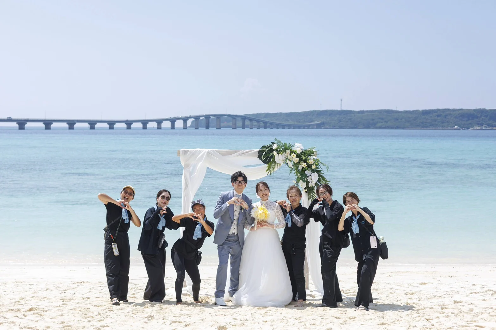
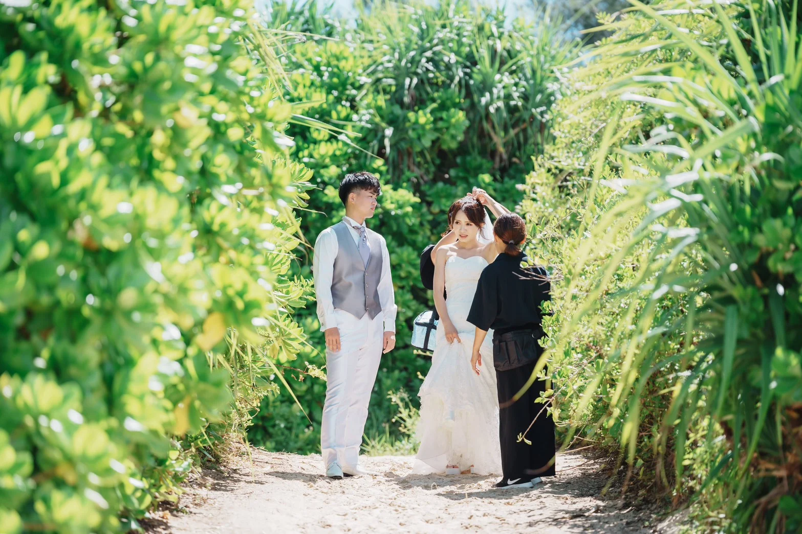
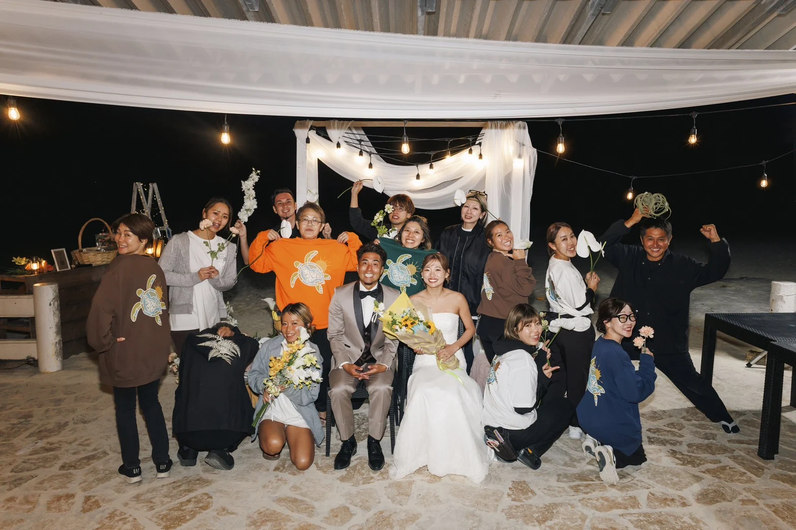

Wedding ceremonies挙式
Talk to the team about the setting and style you have in mind.ご希望の場所やスタイルを、チームへご相談ください。

A celebration with your people, on an island you love.大切な人と、好きな島で。想いを伝えるウェディング。
Miyakojima gives a wedding a beautiful backdrop. Kounotori Wedding begins with the people in front of it. Led by Mutsumi Kouno, the team produces ceremonies, wedding parties and photo weddings, with the wish that everyone gathered will feel the love being shared.
美しい宮古島の景色。その前にいる、おふたりと大切な人たちの想いを大切にするのが幸の鳥Weddingです。河野睦美さんを中心に、挙式やウェディングパーティー、フォトウェディングをプロデュース。その場に集うすべての方が、愛を感じられる一日を目指しています。
Mutsumi's background as a wedding emcee shaped that approach. She has seen how much a few heartfelt words can mean to a family. Today, she brings that same attention to creating the celebration itself, supported by the island's connections and the spirit of helping one another.
原点にあるのは、婚礼司会として人生の節目に立ち会ってきた経験。ご家族や大切な方々の愛情に触れる中で、結婚式そのものをつくりたいという想いが育ちました。島のご縁と、助け合うユイマールの心を大切にしながら、一日をかたちにしています。
Why My Miyakojima Recommends ItMy Miyakojimaがおすすめする理由
For couples drawn to Miyakojima, this is a chance to plan with someone whose own life is rooted here. We are drawn to Mutsumi's warmth, her willingness to try, and her belief that a wedding should be a way to express love, not simply a scene to photograph.
宮古島で暮らし、人とのつながりを大切にしてきた方と、大切な一日を考えられること。睦美さんの温かさと挑戦する姿勢、そして結婚式を「愛を伝える時間」として大切にする想いに惹かれ、ご紹介しています。
Talk to the team about the setting and style you have in mind.ご希望の場所やスタイルを、チームへご相談ください。
A time to gather the people you love and share your thanks.大切な人たちと集まり、感謝を伝えるひとときを。
Keep the island and this chapter of your lives in photographs.島の景色と、おふたりの今を、写真に残す時間。
Dates, venues, prices, inclusions and language support should be confirmed directly before booking.日程、会場、料金、プラン内容、対応言語は、ご予約前に直接ご確認ください。


Salon: 415 Nishizato, Hirara, Miyakojima, Okinawa 906-0012〒906-0012 沖縄県宮古島市平良西里415
Published office hours: 10:00–18:00. Calls may go unanswered during ceremonies; use the official enquiry form if needed.公式掲載の営業時間：10:00〜18:00。挙式などで電話に出られない場合は、公式お問い合わせフォームをご利用ください。